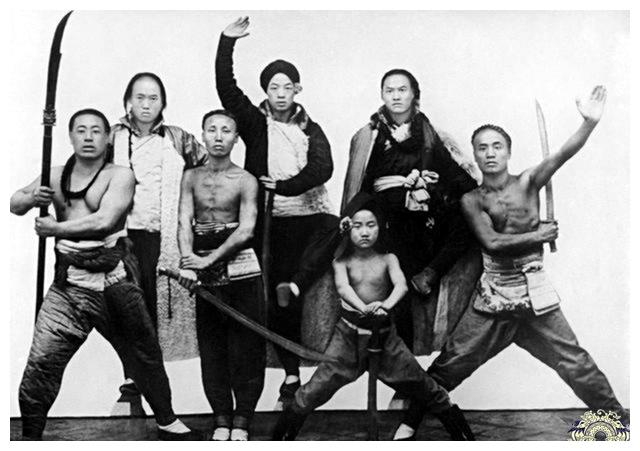

本月，直隶、山东交界之梨园屯、威县一带，忽现“神助拳”“义和团”新旗号。据查，其前身为乡团旧部及梅花拳众，今以“神助拳，义和团，只因鬼子闹中原”为揭帖，遍贴集市、庙门，扬言“避火枪、灭洋教”，三日之内聚众逾三千，官兵亦不敢过问。
亮拳三日，教堂被毁。上月二十二日，拳首赵三多借梨园屯庙会之机，率众“亮拳”三日，短衣红带，持刀阻街，当众拆毁教堂一所，毙教民二人。地方防营近在咫尺，却以“恐激民变”为由按兵不动。教士飞报省城，法使催逼保护，巡抚张汝梅始饬营缉捕，而赵已分散各庄，踪迹飘忽。改名“神助”，暗联白莲。

据内线透露，赵三多于兵败潜逃后，在正定大佛寺与静海、青县“红门”首领密议，决意“化私为公”，将旧部“义和拳”改称“神助义和拳”，并与白莲教门“红门”“黄门”联坛，共奉“刀枪不入”符咒，以避官方“反清”之嫌，专指“灭洋”为的。会中更议定：
今春直鲁苦旱，麦苗未秀，米价腾贵。饥民闻“入坛可食粥、练刀可保家”，扶老携幼而至，旬日间新城、板家窝、白沟河皆立拳坛。地方官或出示禁止，或佯作不知，威县令私下叹曰：“禁之则聚而为盗，听之或可暂安。”
法、德两使已联合照会总署，要求“限期剿平”，否则“派兵自卫”。而京中大臣对拳众看法不一：有谓“乌合之众，速剿为是”；亦有谓“民气可用，且观其后”。军机处密电直督，令“相机安抚，毋令滋蔓”，显见投鼠忌器，剿抚未定。
预知后事如何，且看下一篇报道：八国联军